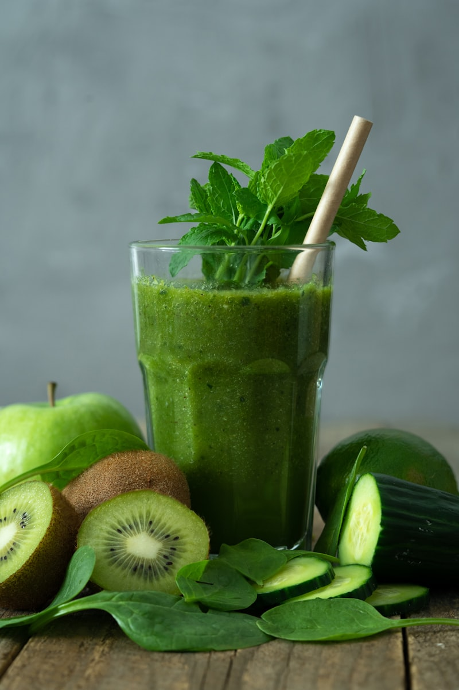
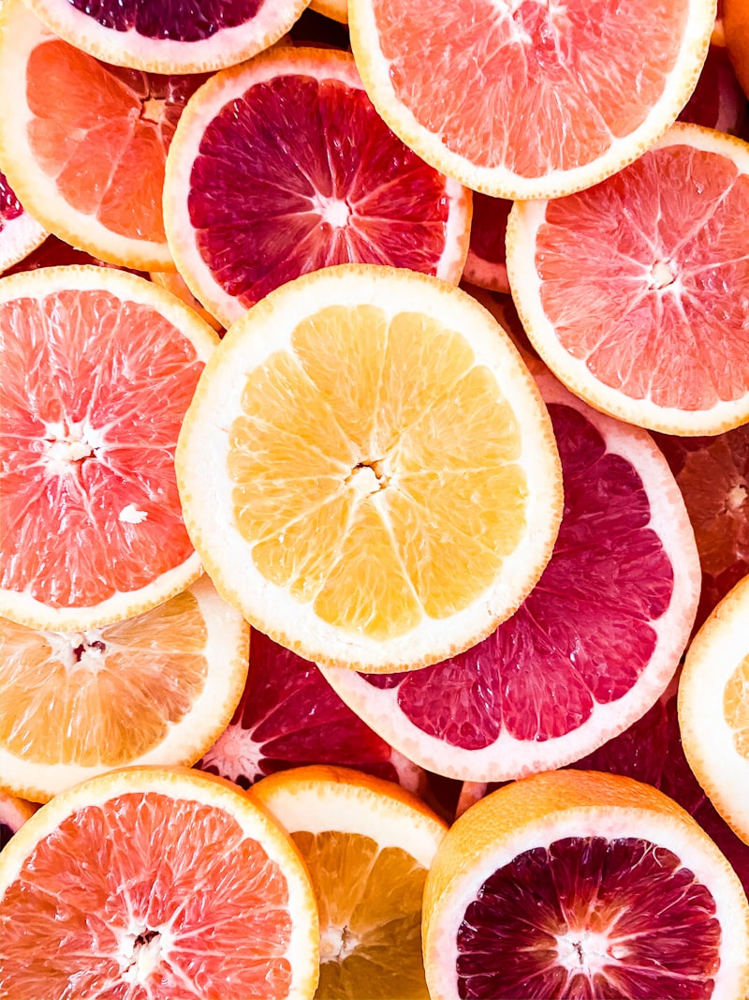
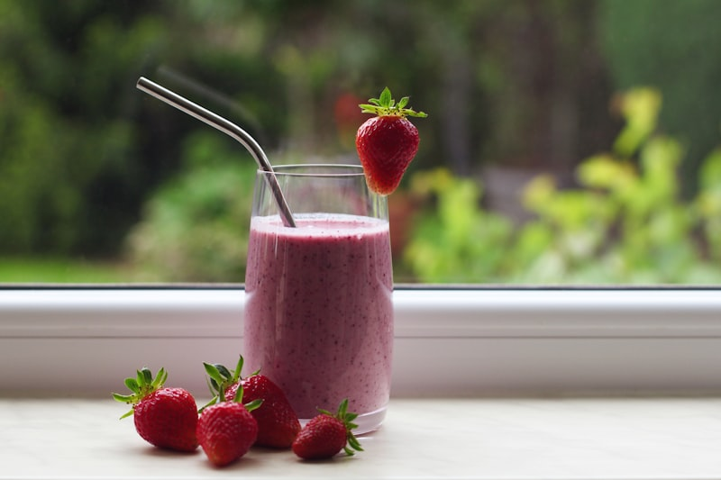
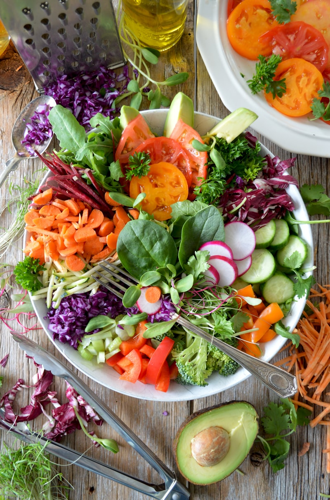
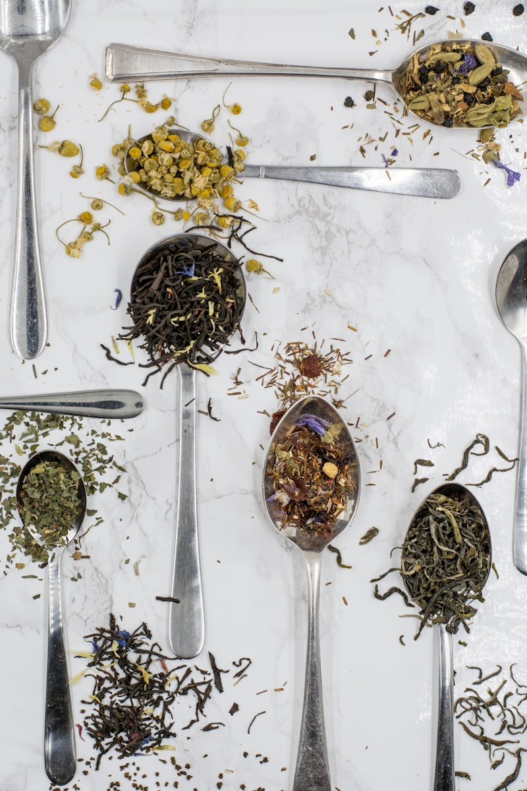
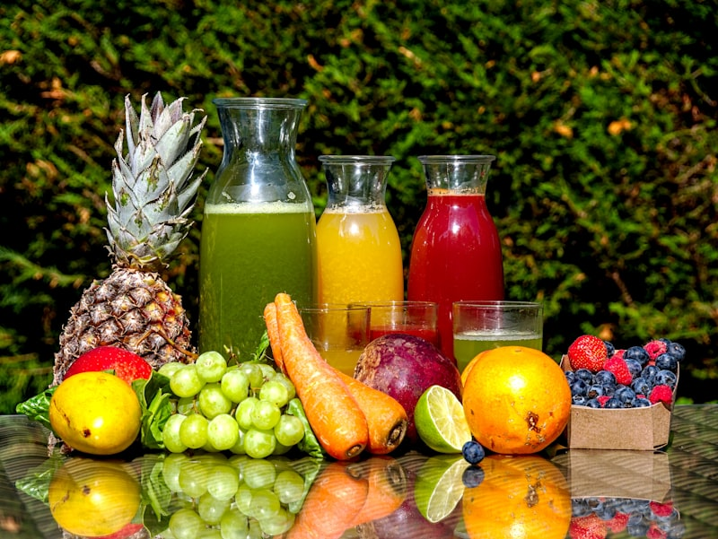

Jugos Verdes: Tu Farmacia Líquida para el Equilibrio Hormonal
Los jugos verdes no son una moda — son una herramienta poderosa de nutrición concentrada que puede transformar tu equilibrio hormonal cuando se preparan correctamente.
Los vegetales de hoja verde son ricos en clorofila, magnesio, antioxidantes y enzimas vivas que apoyan tu hígado, reducen inflamación y mejoran la sensibilidad a la insulina.
Pero OJO — no todos los jugos verdes son iguales. Un jugo mal formulado (con mucha fruta y poco vegetal) puede ser una bomba de azúcar disfrazada de salud.
Las 3 reglas de oro de los jugos hormonales:
• 🥬 REGLA 70/30 — Mínimo 70% vegetales, máximo 30% fruta (o menos)
• 🍋 USA LICUADORA — Conserva la fibra, a diferencia del extractor que la elimina
• 🧊 CONSUME FRESCO — Bebe inmediatamente o guarda máximo 24h en refrigerador
En esta guía encontrarás jugos para cada momento del día y cada necesidad: energía matutina, digestión, antiinflamación, inmunidad y relajación nocturna.

🌿 Jugos Verdes Básicos — Tu Base Diaria
Estos jugos son tu punto de partida. Simples, con pocos ingredientes y efectivos para estabilizar tu glucosa desde la primera semana. Empieza con 3 veces por semana.

- 1 taza de agua filtrada (temperatura ambiente)
- ½ cucharadita de sal marina (no sal de mesa)
- Jugo de ½ limón fresco
- Vierte el agua en un vaso grande
- Agrega la sal marina y revuelve hasta que se disuelva completamente
- Exprime el limón y mezcla bien
- Bebe en ayunas, 20 minutos antes del desayuno

- 1 taza de espinaca fresca
- ½ pepino con cáscara
- 1 rama de apio
- 1 cucharadita de jengibre fresco rallado
- Jugo de ½ limón
- 1 taza de agua filtrada
- Hielo al gusto
- Lava bien todos los vegetales bajo agua corriente
- Corta el pepino y el apio en trozos pequeños para facilitar el licuado
- Agrega todo a la licuadora: espinaca, pepino, apio, jengibre, limón y agua
- Licúa por 1 minuto hasta obtener una mezcla homogénea. Agrega hielo y sirve

- 1 taza de espinaca fresca
- ½ limón con cáscara (bien lavado, sin semillas)
- ½ pepino en trozos
- 1 taza de agua de coco sin azúcar añadida
- 3-4 hojas de menta fresca
- Lava bien el limón, la espinaca y el pepino
- Corta el limón en trozos pequeños con cáscara (retira las semillas)
- Agrega todo a la licuadora junto con el agua de coco y la menta
- Licúa bien hasta integrar completamente. Sirve con hielo

⚡ Jugos Funcionales — Un Jugo para Cada Necesidad
Estos jugos van más allá de la nutrición básica. Cada uno tiene un propósito específico: combatir inflamación, mejorar digestión, fortalecer inmunidad o relajar antes de dormir.

- ½ nopal mediano (crudo y limpio)
- 1 taza de acelga fresca
- ½ manzana verde (opcional, si prefieres un toque de dulzor)
- ½ cucharadita de canela de Ceilán en polvo
- 1 taza de agua filtrada
- Jugo de ½ limón
- Pela el nopal, retira las espinas y córtalo en cubitos pequeños
- Lava bien la acelga y la manzana (si la usas)
- Añade todo a la licuadora junto con la canela, limón y agua
- Licúa hasta que se integre completamente. Cuela si prefieres textura más suave

- 1 taza de kale (col rizada) sin tallos gruesos
- 1 rama de perejil fresco
- ½ diente de ajo pequeño (opcional — potente pero intenso)
- 1 cucharadita de vinagre de manzana orgánico
- 1 taza de agua fría
- Jugo de ½ limón
- Hielo al gusto
- Lava bien todos los vegetales. Retira los tallos gruesos del kale
- Coloca el kale, perejil, ajo (si lo usas), vinagre y agua en la licuadora
- Licúa por 45 segundos o hasta que quede suave
- Agrega hielo y limón, licúa 10 segundos más. Consume inmediatamente

- 1 taza de apio picado
- 1 ramita de menta fresca (6-8 hojas)
- 1 cucharadita de semillas de chía (remojadas 10 min en agua)
- ½ taza de té verde frío sin azúcar
- Jugo de ½ limón
- ½ taza de agua
- Lava bien el apio y la menta
- Remoja las semillas de chía en 2 cucharadas de agua por 10 minutos
- Prepara el té verde con anticipación y enfríalo
- Licúa el apio, la menta, el limón, el té verde y el agua. Al final, añade la chía remojada y solo mezcla sin licuar

- 1 trozo de jengibre fresco (3 cm, pelado)
- 1 trozo de cúrcuma fresca (2 cm, pelada) o 1 cdita de cúrcuma en polvo
- Jugo de 1 limón completo
- 1 pizca de pimienta negra (ESENCIAL — activa la curcumina)
- ½ taza de agua
- 1 cucharadita de miel pura (opcional)
- Pela el jengibre y la cúrcuma. Si usas cúrcuma fresca, cuidado: mancha todo de amarillo
- Licúa el jengibre, cúrcuma, limón, pimienta negra y agua por 30 segundos
- Cuela si deseas (o tómalo con la pulpa para máxima fibra)
- Bebe como 'shot' de una vez — es concentrado e intenso. Sigue con un vaso de agua

- 1 taza de espinaca fresca
- 1 naranja pelada y en gajos
- ½ limón con cáscara (sin semillas)
- 1 trozo pequeño de jengibre (1 cm)
- 1 zanahoria mediana pelada
- ½ taza de agua
- Lava todos los vegetales. Pela la naranja y la zanahoria
- Corta todo en trozos pequeños para facilitar el licuado
- Agrega espinaca, naranja, limón, jengibre, zanahoria y agua a la licuadora
- Licúa 1 minuto hasta obtener textura homogénea. Sirve con hielo
- 1 taza de agua caliente (no hirviendo)
- 1 bolsita de manzanilla o valeriana
- ½ cucharadita de canela en polvo
- 1 cucharadita de vinagre de manzana
- 1 pizca de nuez moscada
- 1 cucharadita de miel pura (opcional)
- Calienta el agua a punto de infusión (no hirviendo — preserva los compuestos activos)
- Agrega la bolsita de manzanilla o valeriana y deja reposar 5 minutos
- Retira la bolsita y mezcla la canela, vinagre de manzana y nuez moscada
- Bebe tibio 30 minutos antes de acostarte — es tu ritual de cierre hormonal
💪 Batidos Verdes Proteicos — Jugos que Alimentan
Cuando quieres más que un jugo — un batido que puede funcionar como snack o complemento de comida. La proteína los convierte en estabilizadores hormonales completos.
- 1 taza de espinaca fresca
- ½ banana congelada (corta en rodajas antes de congelar)
- 1 cucharada de mantequilla de maní natural
- 1 taza de leche de almendras sin azúcar
- 1 cucharadita de semillas de chía
- ½ cucharadita de canela
- Hielo al gusto
- Agrega la leche de almendras y la espinaca a la licuadora primero — licúa 20 segundos
- Añade la banana congelada, mantequilla de maní, chía y canela
- Licúa 1 minuto hasta obtener textura cremosa y espesa
- Agrega hielo si quieres más frío. Consume inmediatamente
- 1 taza de espinaca fresca
- ¼ de aguacate maduro
- 1 cucharada de cacao puro en polvo (sin azúcar)
- 1 taza de leche de coco sin azúcar
- 1 cucharadita de miel pura (opcional)
- ½ cucharadita de extracto de vainilla
- Hielo al gusto
- Licúa la espinaca con la leche de coco primero hasta que desaparezca
- Agrega el aguacate, cacao, vainilla y miel (si la usas)
- Licúa 1 minuto hasta textura cremosa — el aguacate le da consistencia de milkshake
- Sirve con hielo — sabe a batido de chocolate pero está lleno de vegetales
- 1 taza de kale o espinaca
- ½ taza de piña congelada (porción controlada)
- 1 trozo de jengibre fresco (2 cm)
- ½ cucharadita de cúrcuma en polvo
- 1 pizca de pimienta negra
- 1 taza de leche de almendras sin azúcar
- 1 cucharadita de aceite de coco
- Licúa el kale con la leche de almendras hasta que se disuelva
- Agrega la piña congelada, jengibre, cúrcuma, pimienta y aceite de coco
- Licúa 1 minuto a máxima potencia hasta obtener textura suave
- Consume inmediatamente — la piña le da dulzor tropical sin necesidad de endulzante

📋 Tu Guía Rápida de Ingredientes
No necesitas memorizar cada receta — con esta guía de ingredientes puedes crear tus propios jugos verdes hormonales. Mezcla, experimenta y encuentra tus combinaciones favoritas.
- ── VEGETALES BASE (usa 1-2 por jugo) ──
- 🥬 Espinaca — Magnesio + hierro + clorofila. Sabor suave, ideal para principiantes
- 🥬 Kale (col rizada) — Más densa que la espinaca. Calcio + vitamina K + antioxidantes
- 🥬 Acelga — Rica en potasio y magnesio. Sabor ligeramente dulce
- ── HIDRATANTES (usa 1 por jugo) ──
- 🥒 Pepino — 95% agua, casi cero carbohidratos. Diurético natural
- 🥒 Apio — Alcalinizante, antiinflamatorio, muy bajo en calorías
- ── POTENCIADORES (usa 1-2 por jugo) ──
- 🍋 Limón — Vitamina C, estimula el hígado, IG bajísimo
- Jengibre — Antiinflamatorio, mejora circulación y digestión
- Cúrcuma — Curcumina antiinflamatoria (siempre con pimienta negra)
- 🌿 Menta — Relaja el tracto digestivo, alivia gases
- 🌿 Perejil — Diurético natural, rico en vitamina C y hierro
- 🌵 Nopal — Fibra mucilaginosa que estabiliza glucosa
- FÓRMULA BÁSICA: 1 vegetal base + 1 hidratante + 1-2 potenciadores + agua o líquido base
- LÍQUIDOS BASE: agua filtrada, agua de coco sin azúcar, té verde frío, leche de almendras
- Si quieres dulzor natural: ½ manzana verde o ½ taza de piña (máximo 30% fruta)
- SIEMPRE agrega limón — mejora sabor, aporta vitamina C y activa los demás nutrientes
- ❌ Frutas de IG alto en exceso — Banana madura, mango, sandía, uvas (solo porción pequeña)
- ❌ Jugos de fruta comerciales o concentrados — Azúcar líquida sin fibra
- ❌ Miel, azúcar de coco, dátiles en exceso — Endulzantes que siguen siendo azúcar
- ❌ Lácteos azucarados — Yogures de sabor, leche condensada
- ❌ Polvos verdes comerciales — Muchos tienen azúcar oculta y aditivos
- Si usas fruta, que sea: manzana verde, limón, frutos rojos o piña en porción pequeña
- Lee las etiquetas de leches vegetales — busca 'sin azúcar añadida'
- Mejor endulzar con canela, vainilla o un toque de stevia que con miel
- Los polvos verdes NO reemplazan vegetales frescos — la fibra y las enzimas vivas se pierden
- ── SEMANA 1 (3 jugos) ──
- Lunes → Agua de Magnesio Matutina (la más simple para empezar)
- Miércoles → Jugo Verde Clásico Hormonal (tu base diaria)
- Viernes → Refrescante de Clorofila con Agua de Coco
- ── SEMANA 2 (4 jugos) ──
- Agrega: Martes → Shot Antiinflamatorio de Cúrcuma
- ── SEMANA 3 (5 jugos) ──
- Agrega: Jueves → Batido Verde Proteico como snack de media mañana
- ── SEMANA 4+ ──
- Personaliza según lo que más te gustó y lo que tu cuerpo mejor tolera
- No empieces con todos los jugos a la vez — tu sistema digestivo necesita adaptarse
- Si sientes gases o hinchazón las primeras veces, es normal — la fibra está limpiando
- El mejor momento para un jugo verde: en ayunas o 30 minutos antes de una comida
- Observa tu energía, digestión y sueño cada semana — los cambios son sutiles pero reales